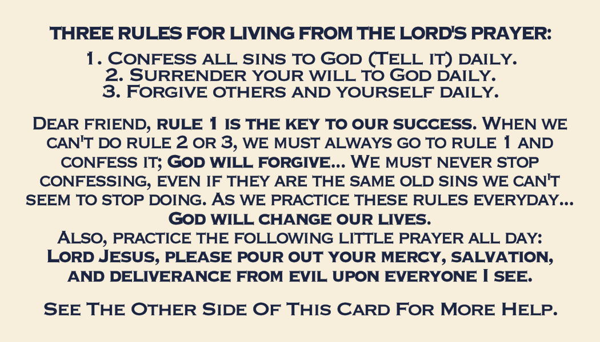
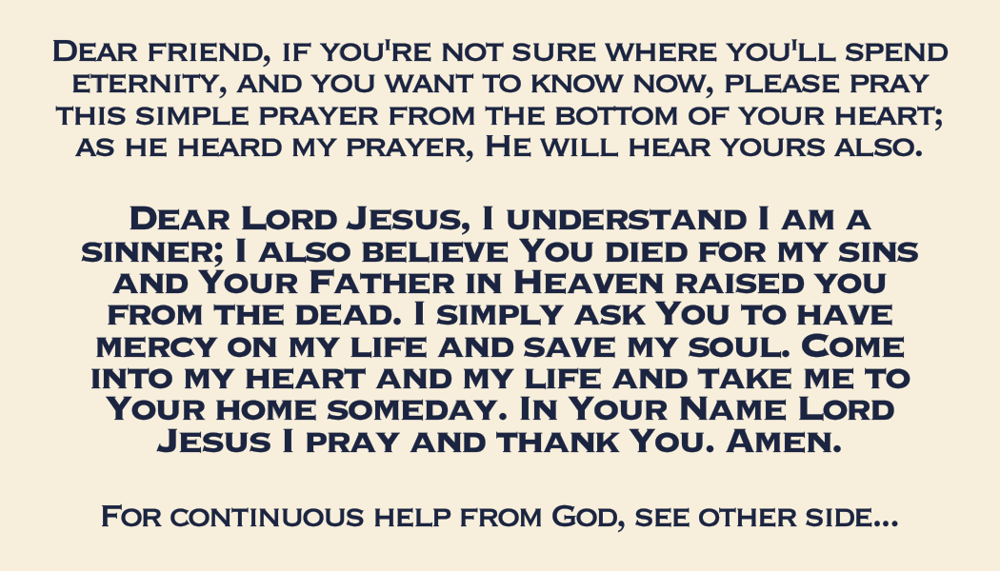

Print the card and give it.


Both sides · flip on the long edge · 100 %, no scaling · short bond, long bond or A4 · board paper if the shop has it
The sheet is one file on three papers — A4: pages 1 and 2 · Letter or short bond: pages 3 and 4 · long bond: pages 5 and 6. Print your paper's two pages only, front then back.
No two-sided printer? Print page 1, put the sheet back, print page 2.
- Tap the file.
- Send it to a print shop, or print it at home — ten cards fit on one sheet (twelve on long bond).
- Cut on the marks. Keep one, give the rest.
A card weighs nothing. In a hand it can carry a whole life home.
THREE RULES FOR LIVING FROM THE LORD'S PRAYER:
1. Confess all sins to God (Tell it) daily. 2. Surrender your will to God daily. 3. Forgive others and yourself daily.
Dear friend, rule 1 is the key to our success. When we can't do rule 2 or 3, we must always go to rule 1 and confess it; God will forgive... We must never stop confessing, even if they are the same old sins we can't seem to stop doing. As we practice these rules everyday... God will change our lives.
Also, practice the following little prayer all day:
Lord Jesus, please pour out your mercy, salvation, and deliverance from evil upon everyone I see.
See The Other Side Of This Card For More Help.
Dear friend, if you're not sure where you'll spend eternity, and you want to know now, please pray this simple prayer from the bottom of your heart; as he heard my prayer, He will hear yours also.
Dear Lord Jesus, I understand I am a sinner; I also believe You died for my sins and Your Father in Heaven raised you from the dead. I simply ask You to have mercy on my life and save my soul. Come into my heart and my life and take me to Your home someday. In Your Name Lord Jesus I pray and thank You. Amen.
For continuous help from God, see other side...